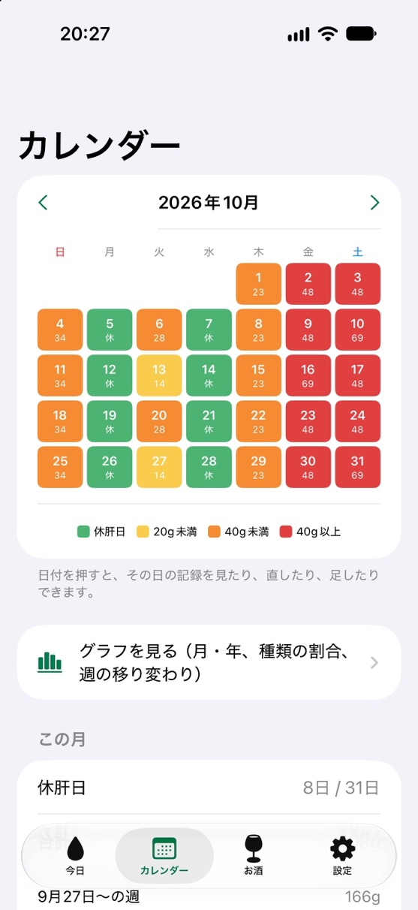
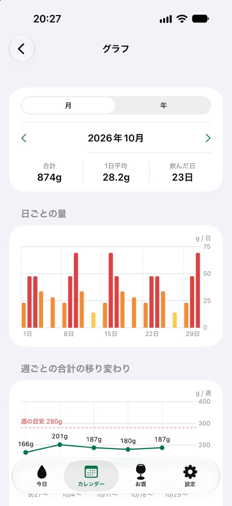
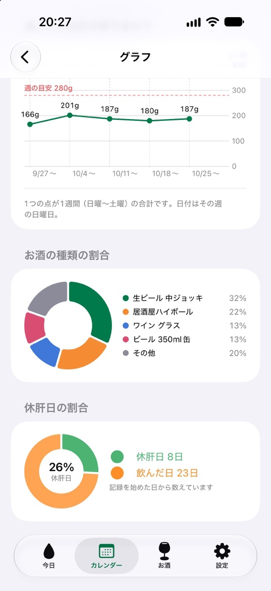

FEATURES
Features
One tap to log
Tap the drinks you usually have. Each one is saved in grams of pure alcohol.
Today, this week, days off
Compare today and this week with your weekly limit, in colors. See alcohol-free days on the calendar.
Time until cleared
A rough estimate of when the alcohol will have left your body (never use it to decide whether to drive).
Charts and CSV (Plus)
Monthly and yearly charts, and export your entries as a CSV file.
SCREENS
Screens



PRICE
Pricing
Free
Free
- Log drinks, today and this week
- Alcohol-free day calendar
- Time until cleared, reminders
Diary Plus
One-time purchase
- No ads
- Monthly and yearly charts
- Export entries as CSV
If you installed the app by December 13, 2026, everything is free for you, forever (no ads either).
FAQ
FAQ
Can I keep my entries when I change iPhones?
Entries are stored only on your iPhone. Restoring your iPhone from a backup brings them over. With Diary Plus you can also export them as a CSV file.
Can I use Diary Plus without buying it again?
Yes. With the same Apple Account, tap “Restore purchase” in Settings.
Does the “time until cleared” tell me when I can drive?
No. It uses the common rule of thumb of about 0.1 g per kg of body weight per hour, and the real time varies a lot with your body, health and sleep. Never use it to decide whether you can drive.
Why is the default weekly limit 280 g / 140 g?
It comes from Japan’s Ministry of Health, Labour and Welfare guideline (2024). Guidelines differ by country, so you can set your own limit in Settings.
How do I switch the language?
Settings → 言語 / Language: Same as iPhone, 日本語 or English.
SUPPORT
Support
For bugs, requests or questions, please send an email.
It helps if you include your iPhone model, iOS version and the app version (“Version History” on the App Store page).
Please note
- This app does not give medical advice or diagnoses.
- Only drink if you are of legal drinking age where you live.
- Never drink and drive.
MORE APPS
More apps
Other apps by KLADO. The home page (in Japanese) has the full list and the story behind KLADO.
KGo to the home page